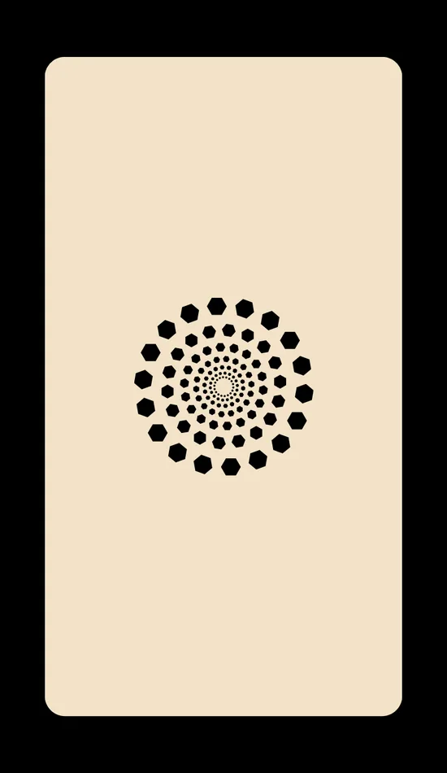

A 60-Card Oracle
Global Black heritage, mysticism & carnival liberation
Type your code, then tap Unlock

Hold your question in mind, then tap the deck
Saved on this device only. Clearing your browser data erases it — use Copy my journal to keep a permanent record.